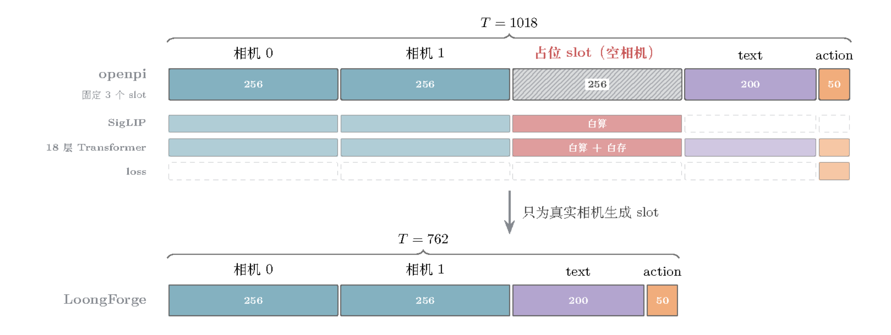
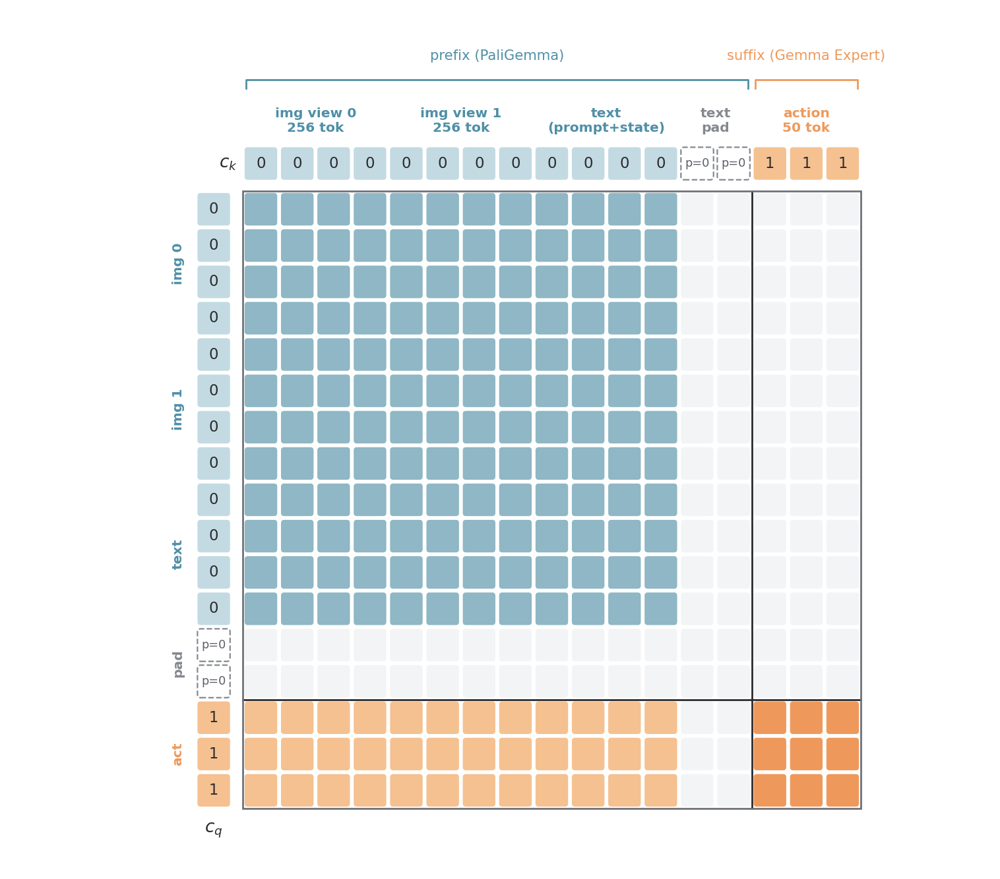
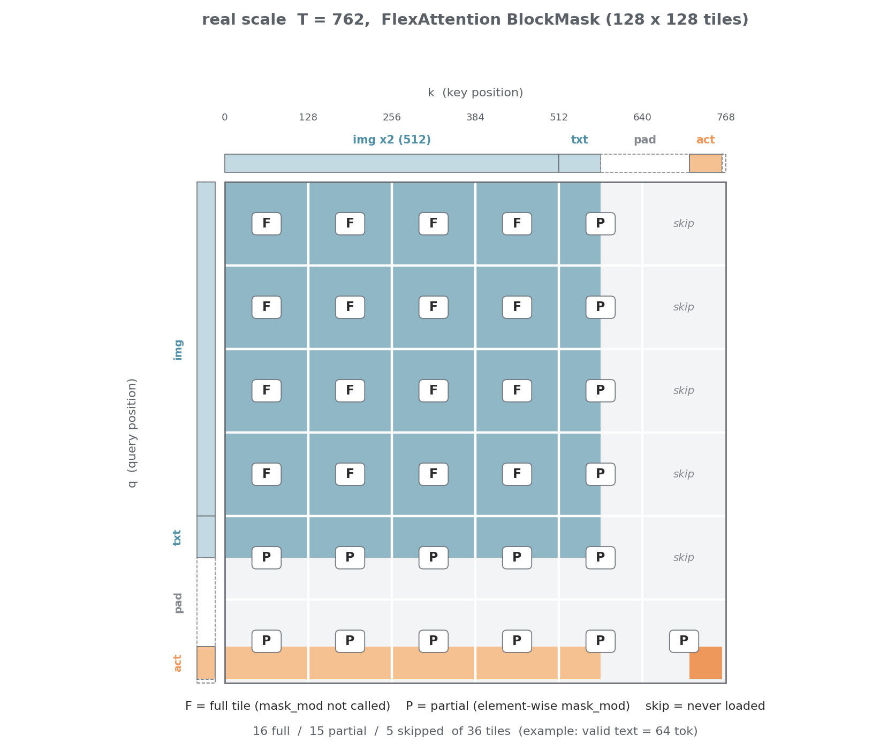
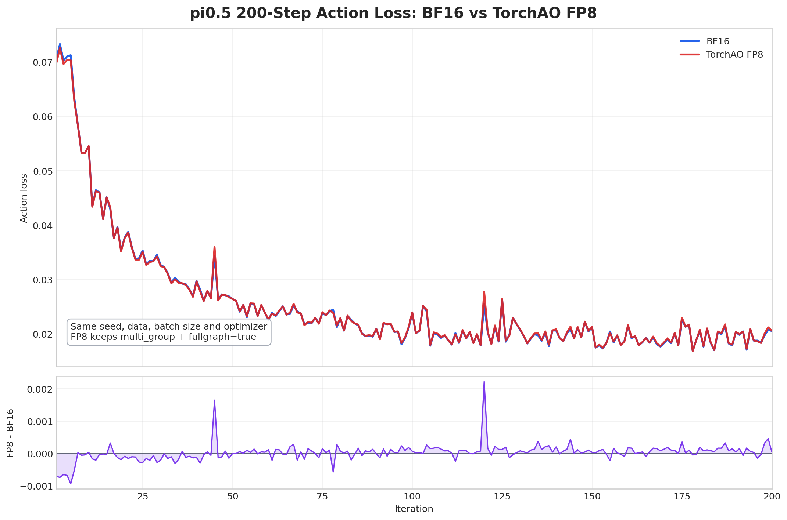

How to Speed Up VLA Training Step by Step: A 3x Acceleration Case Study on Pi0.5
We recently finished accelerating Pi0.5 SFT training on LoongForge.
Before we started, we figured a 3.5B model with a 762-token sequence would not need many tricks. In practice, there turned out to be a lot to refine.
The end result: 24.0 samples/s in bf16 (2.63x the community implementation) and 27.34 samples/s in FP8 (3.00x).
1. A redundant 256 tokens: pruning the empty camera slot
The Pi0.5 sequence has an unusual structure made of three parts: images, a text instruction, and actions. To separate the compute load of the ViT from that of the backbone attention, we first broke the sequence length down by branch.
For the two-camera LIBERO data, the joint sequence of images (2×256), instruction and actions (50) should be 762 tokens. The length we actually saw while debugging was 1018, i.e. 256 tokens of pure padding.
The cause: openpi's Pi0.5 input has three fixed camera slots. When only two cameras are present, the missing one is filled with a placeholder image and its image mask is set to False.
But that mask only makes those 256 tokens invisible to attention; none of the computation is actually skipped. The placeholder image still goes through SigLIP, its 256 tokens still run through all 18 decoder layers, and their activations are still saved, even though no valid token attends to them and they take no part in the loss.

So LoongForge allocates slots on demand on the data side (set data.num_images to the actual number of cameras) and creates slots only for cameras that exist. Pad tokens do not advance position_ids. After pruning, the positional encoding and visibility of the valid tokens are unchanged and the loss is strictly identical, yet roughly 25% of the compute and the corresponding activation memory are saved.
2. Dense, fragmented small ops: accelerating with torch.compile
Profiling shows that apart from a few large GEMMs, each Pi0.5 layer is made of small operators (especially in the action expert, which has a small hidden size): adaRMS normalization, RoPE, concatenating and splitting Q/K/V across the two branches, gelu·up, and gated residuals.
In eager mode, every small op launches its own kernel and keeps its intermediate result in memory. Take adaRMS: cast to fp32, square, mean, rsqrt, chunk out scale/shift/gate, cast back to bf16. Each step produces a full-size intermediate tensor.
That makes torch.compile an obvious candidate. But Pi0.5 is quite dynamic, so the whole model cannot simply be compiled:
- The vision tower is dynamic and follows the number of images.
embed_prefixruns SigLIP on each image in a Python for loop whose trip count depends on the dataset's camera count. The per-image pad mask and block-start markers are also assembled in Python according to the image count and moved to the GPU withtorch.tensor. Compiling this directly easily causes graph breaks or recompiles. - The ViT is not a large share of the time, so compiling it pays off less. Running two images through SigLIP takes only about 20% of the forward pass; the 18 decoder layers take nearly 80%.
So we keep the vision tower and prefix assembly in eager mode and compile only the fixed-shape backbone (paligemma_with_expert). With torch.compile on, Inductor performs three main kinds of fusion:
- Elementwise + reduction fused into one kernel: the whole adaRMS chain becomes a single persistent reduction kernel, with the mean and rsqrt computed in one pass; the residual add and post_attention_layernorm are fused as well.
- Small ops fused into the GEMM: the adaRMS modulation and dtype conversion are absorbed into the Triton GEMM of q_proj, so the normalized result does not need a separate round trip through memory.
- RoPE collapsed end to end: building the cos/sin tables (broadcast multiply, cat, cos/sin, cast) becomes one kernel, and
q * cos + rotate_half(q) * sinbecomes another, which can run at the memory-bandwidth limit.
With this partial compilation, training throughput improved by 54%.
3. An unexpected memory win: FlexAttention to shrink activations
Coming from an LLM mindset, we first looked at the attention part of Pi0.5. Profiling showed that, unlike a typical LLM, attention does not account for much of the end-to-end time: with a sequence of only 762 tokens, attention is about 13% of a decoder layer, while the MLP takes about 76%. End to end, the attention forward pass is only about 2.8%, so there is very little compute time to win back.
What profiling did reveal is that attention produces many activations and many fragmented ops. The eager implementation first uses repeat_kv to copy the single KV head into 8, then materializes the full [B, 8, T, T] probability matrix. Scaling, mask addition, the two-pass softmax, PV and the transpose back are each a separate kernel; every intermediate result has to be kept for the backward pass, and softmax additionally stores an fp32 copy. Even under torch.compile, the activation cost did not drop noticeably.
On the other hand, the Pi0.5 mask is naturally suited to block-sparse attention:
- The prefix (images + text) is fully bidirectional internally but cannot see the actions, so the whole upper-right block is masked out;
- Actions can see every valid prefix token, and the 50 action tokens can see each other;
- Rows and columns that correspond to padding are masked out entirely.

Large regions of the mask are either fully visible or fully masked, which fits FlexAttention's BlockMask: the mask is described in 128×128 tiles, fully masked tiles are skipped outright, and only tiles on the boundary are evaluated element by element.

After switching to FlexAttention, enable_gqa=True broadcasts the KV head inside the kernel instead of copying it, and the backward pass stores only the output and the logsumexp. Speed is about the same as eager (±2%) and makes little difference end to end, but at a micro batch size of 32 each layer stores about 0.63 GiB less, roughly 11 GiB across 18 layers.
4. Selective recomputation
openpi enables full recomputation by default: activations of the vision tower, the 18 decoder layers, the embeddings and the action/time projections are never stored, and the whole forward pass is recomputed during backward.
On LoongForge, with torch.compile and FlexAttention stacked on top, activation memory already drops considerably, but matching the official batch size still requires recomputation.
The question becomes: which part is the best one to recompute? We measured the cost-effectiveness of recomputing each module (the extra milliseconds spent per GiB of activations saved):
- ViT (27 SigLIP layers): 2.8 ms/GiB, +48.5 ms to save 17.5 GiB. The ViT hidden size is narrow (1152 vs. 2048 for Gemma), so the same FLOPs produce the most activations, which makes recomputing it the cheapest.
- PaliGemma MLP: 4.0 ms/GiB. It has the largest activations (37.6 GiB), but costs +150 ms.
- Attention (norm + QKV + RoPE + FlexAttention): 7.8 ms/GiB, storing only 5.5 GiB over 18 layers. MQA's K/V are small and FlexAttention does not store a score matrix, yet recomputing means running the QKV projection and the attention forward again. Small activations and expensive compute make it the worst deal.
- Gemma Expert MLP: it processes only 50 action tokens and totals 0.7 GiB across 18 layers, so recomputing it or not is within the noise.
We therefore chose to recompute only the ViT (using LoongForge's --activation-checkpoint-module-patterns to match only the SigLIP layers), which keeps the recomputation overhead as low as possible.
5. The communication bottleneck without NVLink: layered compilation to hide the gradient AllReduce
With NVLink, gradient communication is usually not a bottleneck. In our actual training setup, however, PCIe communication is expensive: the bf16 gradients of Pi0.5's 3.5B parameters are about 7 GB, and a ring AllReduce moves 12.25 GB per GPU, taking as much as 220 ms.
Profiling showed that because the whole backbone was initially compiled by torch.compile into a single graph, the backward Inductor generates is one monolithic autograd Function. All parameter gradients therefore become ready only at the very end of the backward pass, so the DDP gradient buckets can only run serially after backward, and about 215 ms of communication per step is fully exposed.
5.1 The intended use of DDPOptimizer + torch.compile: wrap the whole model and schedule it together with communication
PyTorch ran into this problem long ago. The core idea is: the larger the scope the compiler sees, the better. Ideally you hand it the whole model, or even a whole training step, and it schedules gradient communication and overlaps it with compute.
DDPOptimizer(on by default since PyTorch 2.0): whentorch.compileis applied to a DDP-wrapped model, Dynamo splits the forward graph along DDP bucket boundaries and compiles each piece separately, so backward gradients become ready in batches.
Its precondition, however, is that the model can be captured as a single full graph.
5.2 Partial compilation is incompatible with DDPOptimizer
As noted above, the peculiar ViT structure of Pi0.5 prevents compiling the whole model with torch.compile. Compiling only the backbone means explicitly calling torch.compile on a submodule inside DDP, and then DDPOptimizer crashes:
- Symptom: the first launch after clearing the compile cache always fails with
BackendCompilerFailed, ultimately caused by accessingdata_ptr()on a FakeTensor; restarting without clearing the cache works. This was very misleading, and we suspected autotune or CUDA Graphs for a while. - Root cause:
- DDPOptimizer wraps another layer of compilation on the outside, producing nested compilation. Before compiling the next subgraph, DDPOptimizer runs the previously compiled subgraph under FakeTensorMode to obtain the output shape/stride. The AOTAutograd runtime wrapper of the inner compile does not know it is in FakeTensorMode, takes the real
autograd.Function.applypath, and fails on the FakeTensor'sdata_ptr(). - A warm cache works only because an FX graph cache hit bypasses this path. Changing the shape, the number of ranks, or clearing the cache reproduces the failure.
- DDPOptimizer wraps another layer of compilation on the outside, producing nested compilation. Before compiling the next subgraph, DDPOptimizer runs the previously compiled subgraph under FakeTensorMode to obtain the output shape/stride. The AOTAutograd runtime wrapper of the inner compile does not know it is in FakeTensorMode, takes the real
So we had to turn it off first (--no-dynamo-optimize-ddp). The cost is exactly what we analyzed above: with nobody splitting the graph, gradients only become ready after the entire backward graph finishes, and the communication is completely exposed.
5.3 Layered compilation: splitting the graph by hand
Since a full-graph compile is not possible and DDPOptimizer cannot be used, we simply split the graph ourselves inside the backbone.
We switched the compilation strategy to multi_group compilation: each of the 18 decoder layers is its own compilation unit (identical shapes are compiled once and the other 17 layers reuse the result), and the final norm, the action input projection + time MLP, and the action output projection each become their own small graph.
As a result, the backward of every layer is an independent autograd.Function: as soon as the backward of layer N finishes, its gradient bucket can launch AllReduce immediately, overlapping with the backward compute of layer N-1.
In essence, this implements by hand what DDPOptimizer is meant to do, only with the split points pinned exactly to layer boundaries, and with no dependency on DDPOptimizer at all. With manual layered compilation the exposed communication essentially disappears, for a +10% throughput gain.
6. Validating bf16 quality: the LIBERO evaluation
With the bf16 optimizations above combined, end-to-end training throughput rises to 24.0 samples/s, 2.63x the community throughput.
For quality, the LoongForge bf16 model's 5-run average results on the four LIBERO suites are:
| Suite | Community | Community reproduced | LoongForge (bf16) |
|---|---|---|---|
| libero_spatial | 97.0 | 96.0 (−1.0) | 99.6 (+2.6) |
| libero_object | 99.0 | 98.0 (−1.0) | 99.6 (+0.6) |
| libero_goal | 98.0 | 99.0 (+1.0) | 98.8 (+0.8) |
| libero_10 (Long) | 96.0 | 96.0 (0.0) | 97.0 (+1.0) |
| Average | 97.50 | 97.25 (−0.25) | 98.75 (+1.25) |
The numbers in parentheses are differences relative to the community result. The LoongForge version averages 98.75, 1.25 points above the community, and is no lower than the community on any of the four suites. Despite the faster training, model quality is as expected.
7. Pushing compute further with FP8
By this point, there is little left to squeeze out of bf16. Next we moved all Linear modules in Pi0.5 to FP8 compute: inputs and weights are quantized to FP8 for the GEMM, the result is restored using the scales, and the tensors stay in bf16 before and after the computation.
7.1 Trying FP8 with TransformerEngine
The first thing we tried was TransformerEngine's FP8: replace nn.Linear with te.Linear and wrap the forward pass in fp8_autocast. The real problem is that it conflicts with the earlier optimizations:
- It conflicts with torch.compile and breaks the graph everywhere.
- TE has internal functions decorated with
@torch.compiler.disable()(fp8 metadata and amax handling). - Dynamo therefore breaks the graph at every
te.Linear: 218 Linear layers mean more than 200 graph breaks, and the adaRMS and gelu·up fusions before and after each Linear can no longer attach to the GEMM.
- TE has internal functions decorated with
- Graph breaks directly raise activation memory.
- With a full graph, AOTAutograd partitions forward and backward together, so cheap elementwise ops such as adaRMS, gelu·up, RoPE and residuals are recomputed in backward and only a few tensors are saved.
- After graph breaks, a layer is cut into several segments: the Linear input must actually be written to memory, the Linear stores another copy for backward, and nothing can be recomputed across segments. Accumulated over 18 layers this adds about 13 GiB.
So TE's FP8 GEMM itself is fine, but inside the torch.compile-centered optimization path of Pi0.5, the graph breaks and the extra memory eat up the gains and easily turn them negative.
7.2 FP8 with TorchAO
TE's problem is graph breaks, so we looked for an FP8 solution that can stay inside the compiled graph. That led us to TorchAO with the tensorwise recipe.
In TorchAO's Float8Linear, amax, scale and cast are all ordinary PyTorch ops and the GEMM goes through torch._scaled_mm, so Dynamo can trace it directly into a graph.
In measurements, memory use was actually lower than bf16. Our hypothesis: the Float8Linear autograd Function is written to save the bf16 input for backward, but because it lives inside the compiled graph, the partitioner can see that backward only re-casts this input to FP8 to compute wgrad, so it stores the FP8 version plus one scale instead, which halves these activations.
Which Linear layers use TorchAO FP8 is decided in two stages:
- Static rules:
- Of 458 candidates, precision-sensitive modules (vision_tower, multi_modal_projector, the action/time projections) keep their original precision, skipping 204;
- another 36 small Linear layers are dropped via
fp8-min-dim=2048, because their GEMMs are so small that the quantization overhead exceeds the time FP8 saves.
- Trace validation:
- We use Kineto traces to map every GEMM back to its module by shape, compare measured bf16 and FP8 kernel times, and keep only the ones that actually get faster;
- The PaliGemma MLP and the attention projections are both 1.8–2.0x faster; two
lm_headlayers that never execute during training are excluded, leaving 216 in the end.
In the end, GEMM's share of a step falls from 54% to 33%, and throughput improves by another 13.9% on top of bf16, reaching 27.34 samples/s, 3.0x the community implementation.
On accuracy, compared with bf16 the loss has a Pearson correlation of 0.9997 and a mean relative error of 0.56%.

If you are training VLA or other embodied models, we welcome you to try LoongForge, and to reach out through GitHub Issues.